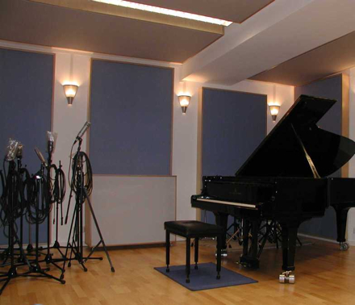
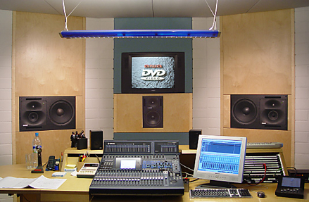
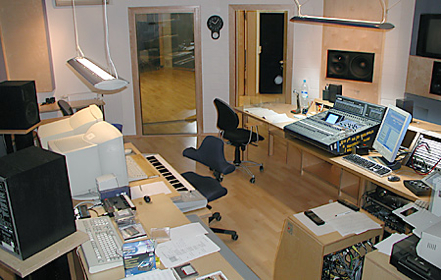

Produktionsumgebung
Für die Realisation der Aufnahmen können wir auf unser eigenes Tonstudio
in Frechen bei Köln zurückgreifen.

Aufnahmeraum (Teilansicht)

Perfekte Regieausstattung, State-of-the-Art-Equipment und
professionelles Mastering

Perfekte Ausstatung für
digitale und analoge Musikproduktionen